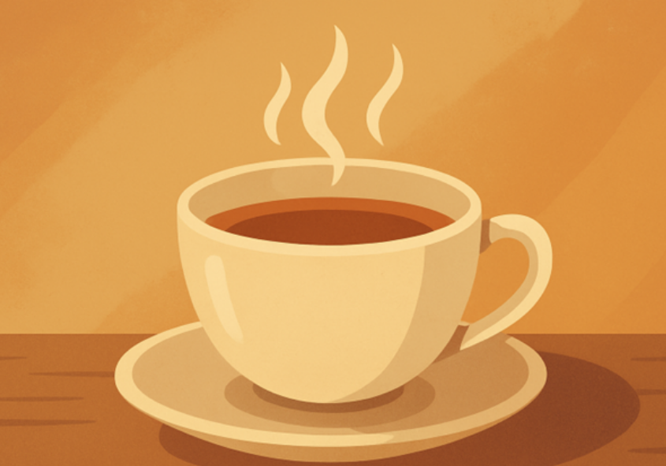

My Mission
Is no Request Really a Bother?
It all started with a phone call to my grandmother, Sally. She was telling me about a friend at her senior living community in Tulsa, Oklahoma. Her friend wanted a cup of tea, but it wasn’t mealtime. Even though the staff would have gladly helped, she hesitated to ask because she didn’t want to be a burden.That story stayed with me. I realized that the same feeling often appears when it comes to technology. Many seniors want to learn and use it, but they hesitate to ask for help because they think it might inconvenience someone.
That is why I dedicate time each week to helping seniors feel confident with technology. Whether it’s setting up a phone, managing online safety, or exploring new tools, I make sure every question is welcome and every problem is solvable.
My guiding principle is simple: no request is a bother. Technology should make life easier, not more intimidating, and my mission is to ensure every senior I meet feels supported, capable, and never alone in the digital world.